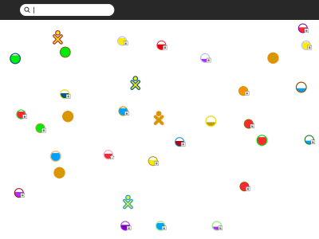
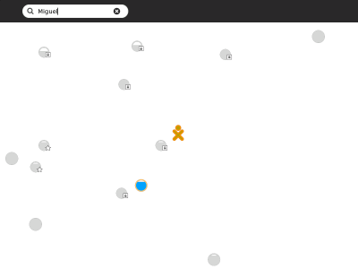
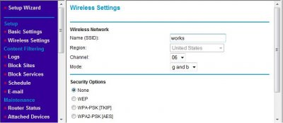
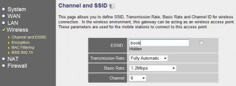

Troubleshooting Connectivity¶
You can look at http://wiki.laptop.org/go/Support_FAQ for many technical troubleshooting tips, but you should read through all the information on this page to troubleshoot the wireless connectivity yourself. Understanding wireless router configuration
Connect your router to any computer, and then use a web browser to view the router’s configuration page and change the router’s settings.
Here are some common router manufacturer’s administrative addresses, usernames, and passwords used for configuring router information. To find a more complete list, you may try visiting another computer that has an internet connection (for example, the local library) and searching the Internet for router default logins. Router
Manufacturer |
Address |
Username |
Password |
|---|---|---|---|
3 Com |
admin |
admin |
|
D-Link |
admin |
||
Linksys |
admin |
admin |
|
Broadband |
admin |
admin |
|
Netgear |
admin |
password |
|
Gateway2Wire |
If you are unable to connect a computer to your router to do this, call your Internet Service Provider and ask them for assistance. They should be able to access your router remotely, get the needed information for you, and even make any needed changes.
Your wireless router settings may contain Wired Equivalent Privacy (WEP) or Wi-Fi Protected Access (WPA) for security protection. Find out which type of security it uses and the passphrase either by asking your ISP or by using the router’s configuration pages.
Based on the type of security system being used (WPA or WEP), the Wireless Key type varies. For WPA, you use a Passphrase key (for example, “password”, “tHisisAp4ssword”). For WEP, use either a Hex key (for example, “4f4c504321”, usually all keys that consist of only of 0-9 and a-f) or its corresponding ASCII key (“OLPC!”). 40-bit Hex keys are 10 letters/numbers long, corresponding to 5 letter/number ASCII keys.
Common connectivity problems and solutions¶
Inability to connect with an Access Point from the Neighborhood View is the most commonly reported symptom. The symptom is usually a flashing circle icon where the access point circle icon never appears in the Frame or the circle’s menu never contains “Connected.” This flashing animation indicates the XO is trying to connect, but the lack of connection indicators tells you that it fails to connect. If this happens, try the troubleshooting suggestions just below. Is the wifi hotspot dot visible in the Neighborhood View?
Go to the Neighborhood View and type the name of your SSID in the Seach box to highlight your access point. Each circle network icon represents a Service Set Identifier (SSID). On one of the icons in the Neighborhood View, you should see your Wi-Fi hotspot’s network name.


If you cannot see the network name there may be a few reasons for this, so continue troubleshooting.
Is your Wi-Fi router filtering connections based on a MAC Address?¶
You can prevent other computers from using your wireless router by configuring it to filter by MAC Address. A MAC Address is a unique address embedded in your computer’s network adapter. While MAC address filtering is not a secure method of protecting a network, some routers use it, and it could prevent your XO from using that access point.
To fix a filtering problem, you can find the MAC Address and add it to the list of allowed computers that can connect with the wireless router.
To do so, launch the Terminal Activity and type these commands:
/sbin/ifconfig -a eth0
The MAC address is in the first line next to the HWAddr tag: and is in the form of “00:17:C4:XX:XX:XX”
In the WiFi router configuration for filtering, add the MAC Address you found with the ifconfig command.
Is your WiFi router configured to support 802.11b or 802.11g or both?¶
Read the documentation for your wireless router to determine how to configure it for 802.11g support, or to determine if it is using the 802.11g protocol. In this example, the Mode drop-down list is where you would look for protocol settings. It may not work to have both g and b modes as shown, so try different configurations to see if another configuration works.

Are the access point settings not in channels 1, 6, or 11?¶
Is your access point working on another channel that is not in 1, 6, or 11? For some older builds, the XO expects to find access points in one of these three channels, the three non-interfering channels available to 802.11g wireless protocol.
Try changing your access point to one of the three channels and check if you can associate your XO to it. Refer to your access point’s documentation for information on changing the frequency channel that your access point broadcasts on. This image shows an example of the settings for a wireless router. The Channel field is where you change the frequency setting.

Why can’t the XO Browse when connected?¶
Symptom: Your XO shows that your Internet connection is working, but you cannot browse or search any pages.
Most likely, the XO has failed to receive DNS information from your internet access point. If this is the case, you would be able to access the Internet for sites named directly with IP addresses but not their common names. In other words, http://209.85.133.18 would work but http://www.google.com would not.
Verify what the XO has received (from the Internet access point) for DNS information by using the Browse Activity and looking at this URL:
file://localhost/etc/resolv.conf
This page should show the IP address of the DNS server assigned by the Internet access point. If there isn’t an IP address on this page, or if the IP address assigned is wrong, this would account for the behavior you’re seeing.
If there is no IP address, or the address is wrong, you’ll need to determine why the Internet access point is failing to supply one, but this is likely to be misconfiguration of the access point.
Connecting to the Internet without wireless access¶
If you cannot successfully or consistently connect to the Internet using Wi-Fi, you can use a USB-to-Ethernet connector to hook up to a wired connection rather than wireless. Examples of products that have worked for other users include the Linksys USB100M and the Zoltan Tech USB2.0 Fast Ethernet adapter, which cost about USD $10-$25.
If you want to connect to your XO wirelessly with a dial-up connection, you can do it with an older version of Apple’s Airport Extreme (A1034). Apple no longer sells them, but they are available on the Internet for between $18 and $36. Be sure the one you get has a port for the phone line, and preferably, with a phone cord included. Directions for connecting with it are on the Wiki at http://wiki.laptop.org/go/Wifi_Connectivity#Apple_Airport. Connecting while traveling
Your XO makes a wonderful traveling companion. You can connect to a wide variety of public WiFi sites often found in community centers and libraries, even in restaurants and hotels. All you will need to do is to obtain a correct password and log on according to the instructions above. Many places will not require a password to connect and the process will be even easier. Remember, however, that passwords provide an extra layer of internet security. Without them, you run a slightly higher risk of experiencing some type of Internet fraud.